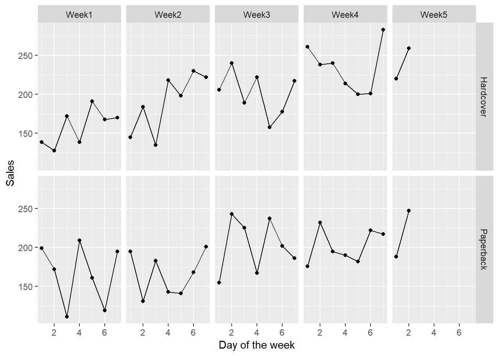
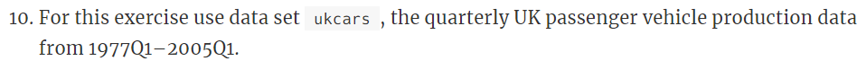
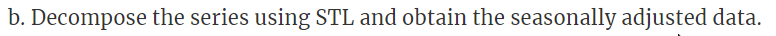
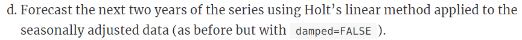

Chapter 5 HW4
5.1 7.5

5.1.1 7.5a - Exploratory analysis
Start with a simple line plot.
books_dat <- data.frame(Day = rep(1:30,times=2),
Type = rep(c("Paperback","Hardcover"),each=30),
Sales = c(books[,1],books[,2]),
stringsAsFactors=FALSE)
ggplot(books_dat,
aes(Day,Sales)) +
geom_line() +
facet_wrap(~Type)
It feels like there could potentially be a day of the week pattern here, but it’s a bit hard to tell from this plot.
Let’s plot each set of 7 days in its own panel.
books_dat <- data.frame(books_dat,
Day.of.week = rep(c(rep(1:7,times=4),1,2),times=2),
Week = paste0("Week",rep(c(rep(1:4,each=7),5,5),times=2)),
stringsAsFactors=FALSE)
ggplot(books_dat,
aes(Day.of.week,Sales)) +
geom_line() +
geom_point() +
facet_grid(Type ~ Week) +
xlab("Day of the week")
We don’t know here which actual day of the week from Sunday to Saturday each day of the week is, but we could infer if there were a weekday vs. weekend pattern if we saw two consecutive days consistently high/low.
Or if there were one particular day of the week with higher sales for whatever reason, we would be able to see it from this plot.
Here, it really does not seem like there is any pattern within what day of the week it is.
As for trend, it seems like there could possibly be an increasing trend, though it’s admittedly a bit hard to tell with such strong daily fluctuations. For our forecasting, we’ll move forward based on the assumption that there is no trend and just run simple exponential smoothing.
5.1.2 7.5b - Forecasting with ses
Use the ses function to forecast.
paperback_forecast <- ses(books[,1],h=4)
hardcover_forecast <- ses(books[,2],h=4)
autoplot(paperback_forecast) +
xlab("Day") + ylab("Sales") +
ggtitle("Paperback sales from past 30 days\n+ forecast through next 4 days (with confidence intervals)")
autoplot(hardcover_forecast) +
xlab("Day") + ylab("Sales") +
ggtitle("Hardcover sales from past 30 days\n+ forecast through next 4 days (with confidence intervals)")
Print the numbers for each.
## [1] "Paperback forecast:"paperback_forecast## Point Forecast Lo 80 Hi 80 Lo 95 Hi 95
## 31 207.1097 162.4882 251.7311 138.8670 275.3523
## 32 207.1097 161.8589 252.3604 137.9046 276.3147
## 33 207.1097 161.2382 252.9811 136.9554 277.2639
## 34 207.1097 160.6259 253.5935 136.0188 278.2005## [1] "Hardcover forecast:"hardcover_forecast## Point Forecast Lo 80 Hi 80 Lo 95 Hi 95
## 31 239.5601 197.2026 281.9176 174.7799 304.3403
## 32 239.5601 194.9788 284.1414 171.3788 307.7414
## 33 239.5601 192.8607 286.2595 168.1396 310.9806
## 34 239.5601 190.8347 288.2855 165.0410 314.07925.1.3 7.5c - Compute RMSE values for the training data in each case.
The MSE (mean squared error) is already included in “mse” within the “model” from the forecast object.
Just take the square root of this to get the RSME (root mean squared error).
## [1] "RMSE paperback forecast:"sqrt(paperback_forecast$model$mse)## [1] 33.63769## [1] "RMSE hardcover forecast:"sqrt(hardcover_forecast$model$mse)## [1] 31.93101The RSME can be thought of as something similar to the standard deviation for the residuals. Basically, it’s a way to measure the spread of how much the actual values deviate from the predictions of the model within the training data.
Here, both paperback and hardcover forecasts have relatively similar RSME values of ~32-34. If the residuals are normally distributed, this means we would expect most predictions to fall within +/- 32-34 books vs. the actual value. While the vast majority would fall within +/- 64-68 books.
5.2 7.6

5.2.1 7.6a - Apply Holt’s linear method to both series and compute four-day forecasts in each case.
paperback_holt <- holt(books[,1],h=4)
hardcover_holt <- holt(books[,2],h=4)
autoplot(paperback_holt) +
xlab("Day") + ylab("Sales") +
ggtitle("Paperback sales from past 30 days\n+ Holt's linear trend forecast through next 4 days")
autoplot(hardcover_holt) +
xlab("Day") + ylab("Sales") +
ggtitle("Hardcover sales from past 30 days\n+ Holt's linear trend forecast through next 4 days")
## [1] "Paperback forecast using Holt's linear trend:"paperback_holt## Point Forecast Lo 80 Hi 80 Lo 95 Hi 95
## 31 209.4668 166.6035 252.3301 143.9130 275.0205
## 32 210.7177 167.8544 253.5811 145.1640 276.2715
## 33 211.9687 169.1054 254.8320 146.4149 277.5225
## 34 213.2197 170.3564 256.0830 147.6659 278.7735## [1] "Hardcover forecast using Holt's linear trend:"hardcover_holt## Point Forecast Lo 80 Hi 80 Lo 95 Hi 95
## 31 250.1739 212.7390 287.6087 192.9222 307.4256
## 32 253.4765 216.0416 290.9113 196.2248 310.7282
## 33 256.7791 219.3442 294.2140 199.5274 314.0308
## 34 260.0817 222.6468 297.5166 202.8300 317.33345.2.2 7.6b - Compare RSME measures vs. simple exponential smoothing.
First, calculate RSME for Holt’s forecasts.
## [1] "RSME for Holt's on paperback"sqrt(paperback_holt$model$mse)## [1] 31.13692## [1] "RMSE for Holt's on hardcover"sqrt(hardcover_holt$model$mse)## [1] 27.19358The RMSE error values using Holt’s linear trend is lower for both series than using simple exponential smoothing.
Assuming both methods have a mean of the residuals around 0, this would mean that we should prefer Holt’s linear trend, since its predictions show less deviation from being perfectly accurate.
However, this is a big assumption! Let’s check if it’s true.
## [1] "Means of residuals for SES, then Holt's, for paperback series:"mean(paperback_forecast$residuals)## [1] 7.175981mean(paperback_holt$residuals)## [1] -3.717178## [1] "Means of residuals for SES, then Holt's, for hardcover series:"mean(hardcover_forecast$residuals)## [1] 9.166735mean(hardcover_holt$residuals)## [1] -0.1357882Looks like the mean of the residuals using Holt’s is actually closer to 0 than for SES, so that’s another check in favor of Holt’s.
Finally, let’s visualize the distribution of residuals as well as plot time vs. residuals.
par(mfrow=c(2,2))
hist_residuals <- function(residuals,title){
hist(residuals,
xlab="Residuals",
ylab="Number of predictions",
labels=TRUE,
breaks=seq(from=-80,to=80,by=20),
main=title)
}
hist_residuals(paperback_forecast$residuals,
"Paperback, SES")
hist_residuals(paperback_holt$residuals,
"Paperback, Holt's linear")
hist_residuals(hardcover_forecast$residuals,
"Hardcover, SES")
hist_residuals(hardcover_holt$residuals,
"Hardcover, Holt's linear")
residuals_vs_time <- function(residuals,title){
plot(1:30,
residuals,
xlab="Day",
ylab="Residuals",
type="p",
main=title,
ylim=c(-70,80))
abline(h=0,lty=2)
}
par(mfrow=c(2,2))
residuals_vs_time(paperback_forecast$residuals,
"Paperback, SES")
residuals_vs_time(paperback_holt$residuals,
"Paperback, Holt's linear")
residuals_vs_time(hardcover_forecast$residuals,
"Hardcover, SES")
residuals_vs_time(hardcover_holt$residuals,
"Hardcover, Holt's linear")
The distributions of residuals look pretty similar. It’s hard to tell with only 30 data points, but they all seem relatively close to normal.
There does not seem to be any major bias across time for predictions to be in any one direction.
Therefore with these other factors being equal and RSME being lower using Holt’s linear trend, it seems that Holt’s linear trend has the clear advantage if we consider only performance within the training data.
5.2.3 7.6c - Compare the forecasts for the two series using both methods. Which do you think is best?
We decided in part 2 that Holt’s linear trend would definitely be considered best if we looked only at performance within the training data.
Now, we are asked to also compare them using the forecasts into the future.
We saw above that SES gives the same forecast value for all four days into the future, with only the prediction intervals changing over time. Whereas Holt’s linear trend gives a different (in this case increasing) value for each point further out in time.
Paperback SES gave a prediction of 207.1097 books for all four days.
Meanwhile Holt’s method gave a prediction pretty close to the prediction from SES (209.4668 books) on the first day. But by the last day its prediction was decently higher (213.2197 books).
Similar idea for the hardcover series (239.5601 from SES, 250.1739 to 260.0817 from Holt’s linear method).
Let’s look at how many days had sales higher than these different predictions within each series.
## [1] "Days with sales higher than SES prediction, then first day Holt's prediction, then last day Holt's prediction, paperback series:"length(which(books[,1] > paperback_forecast$mean[1]))## [1] 8length(which(books[,1] > paperback_holt$mean[1]))## [1] 7length(which(books[,1] > paperback_holt$mean[4]))## [1] 7## [1] "Same for hardcover series:"length(which(books[,2] > hardcover_forecast$mean[1]))## [1] 5length(which(books[,2] > hardcover_holt$mean[1]))## [1] 3length(which(books[,2] > hardcover_holt$mean[4]))## [1] 2We find that both SES and Holt’s method predict future sales that are higher than most sales of the past 30 days, for both series. So while the predictions using Holt’s method are even higher than for SES, it’s not like they are that much more out of the realm than the predictions from SES.
With this information combined with the better performance within the training data, I would continue to say that Holt’s linear trend is the better choice over SES for forecasting from this data.
5.2.4 7.6d - Calculate prediction intervals and compare to intervals from SES and Holt functions.
First, let’s review the intervals from SES and Holt functions.
Prediction interval for first forecast from SES, paperback series: 138.8670-275.3523 (range ~136)
Holt’s linear trend, paperback series: 143.9130-275.0205 (range ~131)
SES, hardcover series: 174.7799-304.3403 (range ~130)
Holt’s linear trend, hardcover series: 192.9222-307.4256 (range ~115)
Now, compare to what we would get from calculating it ourselves using RMSE and assumption of a normal distribution.
zscore_for_95percent_interval <- qnorm(.975)## [1] "Intervals for SES then Holt's, paperback series:"plus_minus_interval <- sqrt(paperback_forecast$model$mse)*zscore_for_95percent_interval
c(paperback_forecast$mean[1] - plus_minus_interval,paperback_forecast$mean[1] + plus_minus_interval)## [1] 141.1810 273.0383plus_minus_interval <- sqrt(paperback_holt$model$mse)*zscore_for_95percent_interval
c(paperback_holt$mean[1] - plus_minus_interval,paperback_holt$mean[1] + plus_minus_interval)## [1] 148.4395 270.4940## [1] "Intervals for SES then Holt's, hardcover series:"plus_minus_interval <- sqrt(hardcover_forecast$model$mse)*zscore_for_95percent_interval
c(hardcover_forecast$mean[1] - plus_minus_interval,hardcover_forecast$mean[1] + plus_minus_interval)## [1] 176.9765 302.1437plus_minus_interval <- sqrt(hardcover_holt$model$mse)*zscore_for_95percent_interval
c(hardcover_holt$mean[1] - plus_minus_interval,hardcover_holt$mean[1] + plus_minus_interval)## [1] 196.8754 303.4723To summarize again:
SES, paperback: 138.8670-275.3523 from function vs. 141.1810-273.0383 calculated
Holt’s, paperback: 143.9130-275.0205 vs. 148.4395-270.4940
SES, hardcover: 174.7799-304.3403 vs. 176.9765-302.1437
Holt’s, hardcover: 192.9222-307.4256 vs. 196.8754-303.4723
All of our calculated intervals are very slightly narrower than those given by the forecasting functions.
Overall though, they are quite similar.
5.3 7.10

5.3.1 7.10a
Start with a simple line plot.
autoplot(ukcars) + ggtitle("1977 to Q1 2005")
Also look at each quarter separately.
ggsubseriesplot(ukcars) + ggtitle("Yearly performance from 1977 to 2004/2005, separated by quarter")
There is a clear seasonal component to the data, with lower sales on average in Q3.
There also appears to be an increasing trend, at least from around 1981-2000 or so.
5.3.2 7.10b

Let’s use the stl function to do this, and plot the result.
stl_decomp <- stl(ukcars,s.window="periodic")
autoplot(stl_decomp) + ggtitle("STL decomposition of ukcars")
These results look pretty sensible. We can clearly see the dips in Q3 in the seasonal component, and the increasing trend throughout most of the time span in the trend component.
5.3.3 7.10c

As described in the question, use the function stlf() to do this.
Then, plot the seasonally adjusted data and corresponding forecast.
damped_forecast_after_stl <- stl_decomp %>% seasadj() %>%
stlf(etsmodel="AAN", damped=TRUE,h=2)
autoplot(damped_forecast_after_stl) +
xlab("Time") +
ylab("Seasonally adjusted production")
5.3.4 7.10d

non_damped_forecast_after_stl <- stl_decomp %>% seasadj() %>%
stlf(etsmodel="AAN", damped=FALSE,h=2)
autoplot(non_damped_forecast_after_stl) +
xlab("Time") +
ylab("Seasonally adjusted production")
5.3.5 7.10e

ets_model <- ets(ukcars)
ets_model$components## [1] "A" "N" "A" "FALSE"The third letter denotes the season type. Here we get “A”, aka an additive seasonal model.
5.3.6 7.10f

## [1] "RSME damped trend after STL decomposition, non-damped after STL decomposition, and ETS automated model selection:"sqrt(damped_forecast_after_stl$model$mse)## [1] 23.32113sqrt(non_damped_forecast_after_stl$model$mse)## [1] 23.295sqrt(ets_model$mse)## [1] 25.23244Based on RSME, both models after STL decomposition perform better on the training data than the one using non-adjusted data and the ETS function.
The non-damped performs slightly better than the damped, but they are really extremely close.
5.3.7 7.10g

## [1] "Forecasts damped trend after STL decomposition, non-damped after STL decomposition, and ETS automated model selection:"damped_forecast_after_stl## Point Forecast Lo 80 Hi 80 Lo 95 Hi 95
## 2005 Q2 394.0146 363.4433 424.5858 347.2599 440.7692
## 2005 Q3 409.3791 371.9947 446.7634 352.2047 466.5535non_damped_forecast_after_stl## Point Forecast Lo 80 Hi 80 Lo 95 Hi 95
## 2005 Q2 395.1772 364.7806 425.5738 348.6897 441.6648
## 2005 Q3 411.4591 373.9155 449.0027 354.0411 468.8771ets_forecast <- forecast(ets_model,h=2)
ets_forecast## Point Forecast Lo 80 Hi 80 Lo 95 Hi 95
## 2005 Q2 427.4885 394.2576 460.7195 376.6662 478.3109
## 2005 Q3 361.3329 322.2353 400.4305 301.5383 421.1275The damped forecast has slightly lower forecast point values than the non-damped, as we would expect.
The ETS model predicts much higher Q2 production and much lower Q3 production than the other two models. However, it is hard to compare directly because the ETS model is based on non-adjusted data, while the others are based on adjusted data.
To convert the forecasts after STL decomposition to real-world realistic numbers, we would have to add back in the seasonal component to these forecasts.
5.3.8 7.10h

Let’s make a histogram and plot time vs. residuals for the ETS model.
par(mfrow=c(1,2))
hist(ets_model$residuals,
labels=TRUE,
xlab="Residuals",
ylab="Number of quarters",
main="ETS model")
mycol <- c("#E69F00", "#56B4E9", "#009E73", "#F0E442", "#0072B2", "#D55E00", "#CC79A7","#490092")
plot(c(rep(1977:2004,each=4),2005),
ets_model$residuals,
xlab="Time",
ylab="Residuals",
main="ETS model",
col=c(rep(mycol[1:4],times=length(1977:2004)),mycol[1]))
abline(h=0,lty=2)
legend("bottom",
legend=paste0("Q",1:4),
col=mycol,
lwd=3,bty="n")
Residuals appear to be normally distributed and unbiased over time and season.